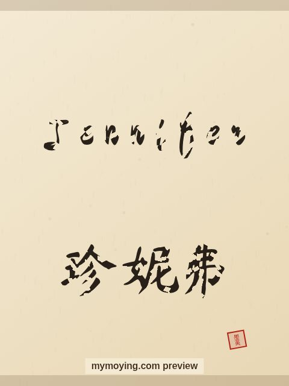

Jennifer in Chinese Calligraphy
A look at Jennifer in brush style, with the Chinese transliteration 珍妮弗 (Zhēn nī fú) and the meaning of the name.

Sample. “Jennifer” in the Regular (楷书) brush style with the Chinese name 珍妮弗 (Zhēn nī fú). The paid file removes the watermark.
The Chinese characters for Jennifer
As a transliteration, Jennifer is usually written 珍妮弗 (Zhēn nī fú). Each character is listed below with its own dictionary meaning — the name is chosen by sound, not by meaning, and Moying does not translate names. Please have a person review the characters before any permanent use such as a tattoo.
Origin and meaning
From Welsh, Jennifer carries the meaning “white wave (from Guinevere)”.
About the name Jennifer
From the Cornish form of Guinevere, the top US girls' name for years.
As a gift or a tattoo
If you are choosing a name for a print or a tattoo, Jennifer carries the meaning “white wave (from Guinevere)” and looks striking in brush strokes.
Open Jennifer in the generatorFree watermarked preview. $1.99 once for a clean high-resolution download of this name in every style and setting. No subscription. Digital product, delivered instantly; see Terms.